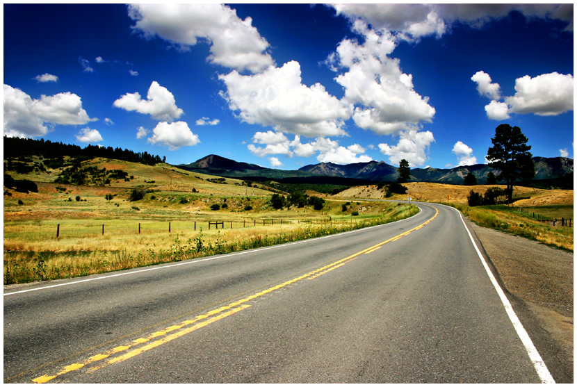

"And now, open your eyes and see what we have made is real..."
—from the song "Xanadu" by "Olivia Newton John"Our goal is to create an open-source virtual reality application that will make travel accessible to all
Our goal is to create an open-source virtual reality application that will make travel accessible to all

Enjoy sitting on the beach chatting with friends both new and old or sit down for coffee. Experience this nonjudgmental safe space where you can be who you are with others who are as well.
Go to places like the Pacific atolls, the Sahara, inner city playgrounds, the surface of Mars, tropical rainforests, the Mongolian steppe, or virtually anywhere else in the Solar system, or even the universe for that matter. If you can dream of it, you're probably already there
Meet new and exciting people who share your interests or learn about new experiences in this fun filled world of enjoyment. Walk the sands of Mars, run across the Mongolian steppes or sunbathe on the surface of the Sun... All this and more awaits you.
Project Xanadu will be a cross-platform experience, playable on Android, iOS, Xbox One, Playstation 4, Windows, macOS, and Linux. Virtual Reality headset and controllers optional.
By utilizing Unity's Unity version 2018.1.1 VR creator, we at Project Xanadu can create a free to use environment. We also encourage all our guests who wish to create new and exciting places to visit to do so and welcome them to share their creations.
We are committed to upholding the values of the open source software community, and as such we intend to make all our code publicly available, and people are free to run, study, share and modify the product as they see fit. Our project files, including the project's source code and assets, are freely available to anyone so long as they do not use any portion of this project as part of a commercial, for profit endeavor as per the GNU General Public License.
Project Xanadu is free to play, forever, though the option to back the project will be available. All backing from our sponsors and guests will be used towards the improvement of the Project Xanadu experience
